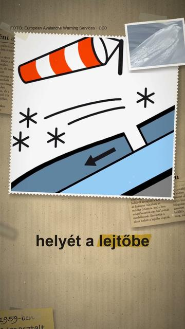

Megnézem a YouTube-onMi történt a Gyatlov-hágónál?
Röviden: 1959 februárjában kilenc tapasztalt túrázó halt meg az Északi-Urálban: éjfél után belülről kivágták a sátrukat, és hiányos öltözetben az egy kilométernél is távolabbi erdő felé indultak (Gaume és Puzrin, 2021).
1959 februárjában kilenc tapasztalt túrázó halt meg az Északi-Urálban: éjfél után belülről kivágták a sátrukat, és hiányos öltözetben az egy kilométernél is távolabbi erdő felé indultak (Gaume és Puzrin, 2021). A rejtélyre a jetitől a KGB-n át a titkos katonai kísérletekig sok elmélet született (EPFL, 2022). Az EPFL és az ETH Zürich kutatói 2021-ben a Communications Earth & Environment folyóiratban egy kis táblás lavina modelljét közölték: a sátor helyét a lejtőbe vágták, az erős szél havat halmozott föléje, és órákkal később egy kis hótábla leszakadhatott, amely a modell szerint súlyos, de nem halálos sérüléseket okozhatott, a boncolással egyezően. Az orosz főügyészség 2020 júliusában szintén lavinát nevezett meg okként (TASS). A modell nem lezárt bizonyíték: a szerzők maguk írják, hogy a túrázók sátron kívüli útját és a holttestek helyzetét nem magyarázzák, a bírálók szerint pedig a lejtő túl lankás volt a lavinához; a szerzők 2021-es expedíciója 30 foknál meredekebb részt mért (EPFL, 2022). A halál fő oka a kihűlés volt (Gaume és Puzrin, 2021; TASS). A képek illusztrációk: a büntetőügy borítója, Igor Gyatlov egy 1958-as túrán, az Otorten-hegy, a két egyetem és a főügyészség épülete, egy svájci táblás lavina és a szélhordta hótábla jele.
Az összes rész forrásokkal: https://valoban.pages.dev/
Források
- Gaume & Puzrin: Mechanisms of slab avalanche release and impact in the Dyatlov Pass incident in 1959, Communications Earth & Environment 2:10 (2021)
- EPFL: Intense press coverage prompts new expeditions to Dyatlov Pass (2022)
- TASS: Prosecutors say avalanche killed Dyatlov group in Urals in 1959 (2020)
3 forrás · Hogyan ellenőrzünk?
Hibát találtál? Írd meg nekünk, megnézzük.
Képek és kreditek
Ez a videó a felhasznált CC BY-SA képek miatt CC BY-SA 4.0 licenc alatt érhető el (https://creativecommons.org/licenses/by-sa/4.0/).
• a Gyatlov-ügy büntetőaktájának borítója (1959) – Szverdlovszki területi ügyészség, Public domain (https://creativecommons.org/publicdomain/mark/1.0/) https://commons.wikimedia.org/?curid=68195428
• Igor Gyatlov egy korábbi, 1958-as uráli túrán – Pjotr Bartolomej, CC BY-SA 2.0 (https://creativecommons.org/licenses/by-sa/2.0/) https://commons.wikimedia.org/?curid=115599787
• sziklák az Otorten-hegyen (Északi-Urál) – Oleg Csegodajev, CC BY-SA 4.0 (https://creativecommons.org/licenses/by-sa/4.0/) https://commons.wikimedia.org/?curid=114673115
• az ETH Zürich főépülete – Leonhard Lenz, CC0 (https://creativecommons.org/publicdomain/zero/1.0/) https://commons.wikimedia.org/?curid=150143355
• az EPFL lausanne-i kampusza (Rolex Learning Center) – Guilhem Vellut, CC BY 2.0 (https://creativecommons.org/licenses/by/2.0/) https://commons.wikimedia.org/?curid=153724049
• kis, magától leszakadt táblás lavina (Svájc, 2013) – Coronium, CC BY-SA 3.0 (https://creativecommons.org/licenses/by-sa/3.0/) https://commons.wikimedia.org/?curid=25677636
• a szélhordta hótábla lavinajele (EAWS) – European Avalanche Warning Services, CC0 (https://creativecommons.org/publicdomain/zero/1.0/) https://commons.wikimedia.org/?curid=174138048
• az orosz főügyészség épülete Moszkvában (2026) – Jurij D. K., CC BY 4.0 (https://creativecommons.org/licenses/by/4.0/) https://commons.wikimedia.org/?curid=194045596
A képek módosítva: 9:16-ra kivágva, átméretezve, kameramozgással, ráégetett felirattal.